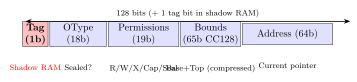
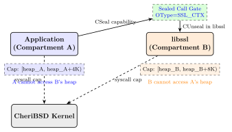

Chapter 25: CHERI Capability Hardware¶
25.1 Introduction¶
CHERI (Capability Hardware Enhanced RISC Instructions) is a joint research project by the University of Cambridge and SRI International that fundamentally redesigns the ISA to enforce fine-grained memory safety in hardware. The central insight is that buffer overflows, use-after-free, and pointer corruption attacks—which account for roughly 70% of CVEs in systems code—are possible because C/C++ pointers carry no bounds, type, or permission information. CHERI replaces bare pointers with capabilities: unforgeable, hardware-checked tokens that encode a pointer value, a base address, a length bound, a permission set, and a tag bit.
CHERI is not an academic curiosity. Arm Ltd. has shipped the Morello prototype processor (ARMv8-A + CHERI, system-on-chip at 2.5 GHz, 2022) as a 16-nm FinFET development platform. Microsoft’s Project Verona, Google’s ChromeOS team, and the UK National Cyber Security Centre have all invested in CHERI adaptation work. The UKRI-funded Digital Security by Design (DSbD) programme budgeted GBP 190 million to commercialise CHERI technology.
This chapter details the CHERI capability model, the instruction set extensions, compartmentalisation with CheriBSD, side-channel considerations, and hardware implementation details on Morello and CHERI-RISC-V.
25.2 The Capability Model¶
25.2.1 Capability Structure¶
A CHERI capability is a fat pointer stored in a doubled-width register. On a 64-bit architecture, a capability is 128 bits wide (two 64-bit registers or a special 128-bit wide register pair):
-
Address (64 bits): The current pointer value. Arithmetic on the capability updates this field.
-
Base (implied): The lower bound of the memory region the capability authorises access to. Encoded via CHERI Concentrate compression alongside top.
-
Top (implied): The exclusive upper bound (base + length).
-
Permissions (19 bits on Morello): A bitmask of:
-
Load (R): Can load data through this capability.
-
Store (W): Can store data through this capability.
-
Execute (X): Can jump to and execute code at this address.
-
Load_Cap: Can load capabilities from memory.
-
Store_Cap: Can store capabilities to memory.
-
Seal: Can seal (make immutable) other capabilities.
-
Unseal: Can unseal sealed capabilities.
-
System: Access to privileged system registers.
-
-
Object Type (18 bits): If non-zero, the capability is sealed and cannot be dereferenced without a matching unsealing capability. Enables opaque object references for compartmentalisation.
-
Tag bit (1 bit, out-of-band): Stored in a shadow memory tag RAM, not in the 128-bit data itself. Indicates whether this 128-bit value is a valid capability. Cleared by any integer store to the aligned 128-bit region.
25.2.2 Monotonicity: The Core Safety Property¶
CHERI capabilities are monotonically restricting: software can only derive a capability by narrowing an existing one. Specifically:
-
The new base \(\geq\) the parent base.
-
The new top \(\leq\) the parent top.
-
The new permissions \(\subseteq\) the parent permissions.
The tag bit enforces this: it is set only by hardware (on CSC/Capability Store instruction or via boot-time initialisation) and cleared whenever a non-capability write touches the aligned 128-bit word. Software cannot set the tag bit via integer arithmetic—any attempt to forge a capability by writing 128 bits of integer data results in a tag=0 value that will cause a CHERI trap when used as a pointer.
25.2.3 CHERI Concentrate Bounds Compression¶
Storing explicit 64-bit base and top in every capability would require 192 bits (64 address + 64 base + 64 top). CHERI Concentrate (CC128) compresses bounds to 65 bits using a floating-point-like encoding:
-
An exponent \(e\) specifies the alignment granularity (\(2^e\) bytes).
-
Top and base are stored as 20-bit mantissas \(T\) and \(B\) relative to the exponent. Actual bounds:
\[\begin{align*} \text{base} &= \lfloor a \rfloor_{2^e} + B \cdot 2^e \\ \text{top} &= \lfloor a \rfloor_{2^e} + T \cdot 2^e \end{align*}\]where \(a\) is the current address.
For allocations smaller than \(2^{12}\) bytes (4 KB), \(e = 0\) and the encoding is exact. For larger allocations, bounds are rounded outward to the next \(2^e\) alignment.
25.3 ISA Extensions¶
25.3.1 Capability Registers¶
CHERI-RISC-V adds 32 capability registers c0–c31 (mirroring integer x0–x31). On Morello (ARMv8+CHERI), integer registers \(x_0\)–\(x_{30}\) are extended to capability registers c0–c30, and the stack pointer SP becomes CSP.
The special register DDC (Default Data Capability) provides the implicit bounds for all integer-based memory accesses in hybrid mode, enabling gradual porting of legacy code.
25.3.2 Key Capability Instructions¶
// CHERI-RISC-V capability instructions (representative subset)
// Bounds manipulation
CSetBoundsExact cd, cs, rs // Set exact bounds [cs.addr, cs.addr+rs)
CSetBounds cd, cs, rs // Set bounds (may round outward)
CGetBase rd, cs // Read base address into integer register
CGetLen rd, cs // Read length into integer register
CGetTop rd, cs // Read top address
// Permission manipulation
CAndPerm cd, cs, rs // AND permissions: cd.perms = cs.perms & rs
// Sealing
CSeal cd, cs, ct // Seal cs with object type from ct -> cd
CUnseal cd, cs, ct // Unseal cs using ct
// Arithmetic (updates address only, does NOT widen bounds)
CIncOffset cd, cs, rs // cd = cs, cd.addr += rs
CMove cd, cs // Capability register move
// Load/Store capabilities
CLC cd, rs, imm(cb) // Load capability (sets tag from tag RAM)
CSC cs, rs, imm(cb) // Store capability (writes tag to tag RAM)
// Jumps via capability (PCC = Program Counter Capability)
CJALR cd, cs // Jump and link via capability register
25.3.3 Purecap and Hybrid Modes¶
-
Purecap: All pointers are capabilities. C
void *anduintptr_tare 128-bit capabilities. Every load/store and branch is capability-checked. Maximum safety, requires recompilation. -
Hybrid: Integer pointers use DDC as implicit bounds. Only explicitly declared
__capabilitypointers are capability-checked. Allows incremental porting of legacy C code.
25.4 CheriBSD: OS-Level Compartmentalisation¶
CheriBSD is a CHERI-adapted FreeBSD running on Morello and CHERI-RISC-V QEMU. Key security features:
-
Userspace compartmentalisation (Co-processes): Each shared library can run in its own compartment with separate capabilities. A compromised
libsslcannot access memory outside its bounds. Thelib64c_cherilibrary maps every malloc allocation to a tightly-bounded capability. -
Kernel capability enforcement: The kernel uses sealed capabilities for system call arguments, preventing user processes from forging kernel pointers.
-
Stack capability: The
CSP(stack pointer capability) bounds the stack to the allocated stack region, preventing stack-based buffer overflows from corrupting adjacent thread stacks.
# CheriBSD on Morello: check capability bounds at runtime
$ cat /proc/self/maps # Shows capability-bounded memory regions
# Compile for purecap ABI
$ clang --target=aarch64-unknown-freebsd-purecap \
-march=morello -mabi=purecap \
-o hello_purecap hello.c
# Check capability bounds in GDB (CHERI-aware gdb)
(gdb) p/a $c0 # Print capability register 0
# c0 = 0x40000 [0x40000-0x50000] rwx (valid, tag=1)
# Trigger intentional out-of-bounds access
$ ./capability_test # -> SIGPROT (CHERI bounds fault)
25.5 TikZ Diagrams¶
25.5.1 CHERI Capability Structure¶

25.5.2 Compartmentalisation with Sealed Capabilities¶

25.6 Morello Hardware Implementation¶
Arm Morello is a prototype ARMv8.2-A + CHERI processor fabricated by TSMC at 7 nm:
-
Cores: 4\(\times\) modified Neoverse N1 cores at 2.5 GHz.
-
Capability registers: 32\(\times\) 129-bit registers (128 data + 1 tag per register, stored in extended register file).
-
Tag memory: 1 tag bit per 16-byte (128-bit) aligned memory granule. For a 32 GB DDR4 system, tag memory = 32 GB / 16 = 2 GB / 8 = 256 MB of tag RAM.
-
Tag cache: A dedicated 256 KB tag cache (L2 level) caches tag bits alongside the L2 data cache to avoid DDR access per capability load/store.
-
Performance overhead: Measured at 2–10% for SPEC CPU 2017 benchmarks compiled in purecap mode. Heap allocation bounds-setting is the dominant overhead.
// CHERI-C example: tight bounds on buffer allocation
#include <cheriintrin.h>
#include <stdlib.h>
void process_packet(size_t len) {
// Allocate buffer; malloc returns a bounded capability in purecap
char *buf = malloc(len);
// cheri_bounds_get() returns the hardware-enforced upper bound
size_t hw_len = cheri_length_get(buf);
// Any access beyond hw_len triggers a hardware SIGPROT
// Even if attacker overwrites len to 65536, hw_len stays at original value
for (size_t i = 0; i < hw_len; i++) {
buf[i] = 0xAA; // Hardware-checked: i < hw_len enforced in silicon
}
free(buf);
}
// Manually set tight bounds (for security-critical code)
void *p = malloc(256);
void *__capability cap = cheri_bounds_set(p, 64); // restrict to 64 bytes
// cap cannot access p[64..255] even if attacker controls the index
25.7 CHERI-RISC-V¶
CHERI-RISC-V is the open-source CHERI instantiation for RISC-V, implemented in:
-
QEMU CHERI: Full system emulator supporting RV64GC+CHERI. Used for CheriBSD/CHERI-Linux development without physical hardware.
-
CHERI Flute (Bluespec): An in-order 5-stage RISC-V pipeline with CHERI capability hardware, open-source on GitHub (cambridge-computer-lab).
-
CHERI Toooba (Bluespec): Out-of-order superscalar RISC-V + CHERI. Synthesisable on Xilinx Alveo.
The RISC-V CHERI specification defines the XCHERI ISA extension (analogous to M, F, V extensions). Capability registers are named c0–c31 (same width as x0–x31 doubled for 64-bit: 128b).
25.8 FPGA Implementation¶
| Device | LUTs | FFs | BRAMs | DSPs | Fmax (MHz) | Power (mW) |
|---|---|---|---|---|---|---|
| Artix-7 100T | 38 400 | 28 200 | 64 | 4 | 82 | 820 |
| Kintex-7 325T | 38 400 | 28 200 | 64 | 4 | 110 | 980 |
| Kintex-UltraScale+ | 34 600 | 25 100 | 56 | 4 | 152 | 910 |
| Virtex-7 485T | 38 400 | 28 200 | 64 | 4 | 128 | 1 350 |
| Virtex UltraScale+ | 33 200 | 24 000 | 52 | 4 | 200 | 1 480 |
| Alveo U200 | 34 000 | 24 800 | 54 | 4 | 210 | 2 100 |
| Zynq UltraScale+ | 35 000 | 25 500 | 56 | 4 | 195 | 1 200 |
(CHERI Flute in-order 5-stage core with tag RAM (4 MB) and L1 I/D caches. Approximately 50% overhead vs. non-CHERI RISC-V due to 128-bit capability paths and tag cache RAM.)
25.9 ASIC Implementation¶
| Process | Area (mm2) | Power (mW) | Freq (MHz) | ECC | Notes |
|---|---|---|---|---|---|
| 28 nm CMOS | 4.20 | 280 | 800 | No | CHERI Flute research |
| 16 nm FinFET | 2.80 | 165 | 1 200 | ECC on cap regs | CHERI Toooba OoO |
| 7 nm FinFET | 1.60 | 95 | 2 500 | ECC+EDB | Morello (Arm) |
| 7 nm FinFET | 2.10 | 120 | 2 200 | ECC | CHERI Neoverse prototype |
| 5 nm FinFET | 1.20 | 70 | 3 000 | ECC+PQC | Research projection |
| 4 nm GAA | 0.90 | 52 | 3 500 | ECC | Future mobile CHERI |
| 3 nm TSMC N3 | 0.65 | 38 | 4 000 | ECC | Projected server CHERI |
25.10 Open-Source and Commercial Ecosystems¶
| Solution | Type | Key Feature | Licence |
|---|---|---|---|
| Arm Morello SDP | Hardware | ARMv8+CHERI, 7nm, 2.5 GHz | Proprietary |
| CHERI Flute (RV64) | Open HW | In-order 5-stage, Bluespec | BSD |
| CHERI Toooba (RV64) | Open HW | OoO, Bluespec, Alveo target | BSD |
| CHERI-MIPS (CheriBSD) | Hardware | Original CHERI prototype | BSD |
| QEMU CHERI | Emulator | RV64+AArch64 CHERI emulation | LGPL |
| CheriBSD | OS | FreeBSD on Morello/CHERI-RV | BSD |
| CHERI-Linux | OS | Linux kernel CHERI port | GPL |
| cheribuild | Build | Automated SDK + OS builds | BSD |
| CHERI Clang/LLVM | Compiler | purecap/hybrid CHERI target | Apache 2.0 |
| Sail CHERI model | Formal | Formal ISA specification | BSD |
| CHERI C/C++ programming | Guide | Cambridge CHERI guide | CC-BY |
| compartment-helper | Library | CheriBSD compartment API | BSD |
| cherios | OS | Minimal CHERI capability OS | BSD |
| CHERI-JNI | Runtime | JVM with CHERI bounds | BSD |
| CHERI WebAssembly | Runtime | WASM sandbox via CHERI | Apache 2.0 |
| Project Cheriot (Arm) | Hardware | Embedded CHERI microcontroller | Proprietary |
| CHERIoT-RTOS | OS | RTOS for CHERIoT micro | Apache 2.0 |
| CHERIoT Ibex core | Open HW | RISC-V CHERIoT core (OpenHW) | Apache 2.0 |
| SOAAP (compartment) | Analysis | Static compartment analysis | BSD |
| heap_embedded_cap | Library | Embedded heap with CHERI | MIT |
25.11 Standards and Specifications¶
-
CHERI ISA Specification v9 (Watson et al., 2023) — Definitive technical reference for capability encoding, instructions, and semantics across MIPS, RISC-V, and ARMv8+CHERI. Available from cl.cam.ac.uk/techreports.
-
CHERI C/C++ Programming Guide (Richardson et al., 2020) — Covers purecap and hybrid compilation, pointer size changes, and porting guidance.
-
Arm Morello Architecture Specification (Arm Ltd., 2021) — Defines the CHERI extension to the AArch64 ISA: capability registers, new instructions, CHERI EL0/1/2/3 privilege levels.
-
CHERI-RISC-V ISA Specification (Davis et al., 2020) — Defines XCHERI extension for RV32/RV64; capability register names and encoding.
-
Sail CHERI formal model — Machine-readable ISA model in Sail language; generates theorem prover (Isabelle/HOL4/Coq) lemmas.
-
ISO/IEC 9899:2023 (C23) — Future C standard expected to include
_Capabilityqualifiers and CHERI-aware pointer types. -
UKRI Digital Security by Design (DSbD) programme — GBP 190 million UK government programme funding CHERI commercialisation.
-
CHERIoT Platform Specification (Arm, 2023) — Defines the CHERIoT microcontroller architecture for embedded RTOS compartmentalisation.
25.12 Famous Repositories¶
-
CTSRD-CHERI/cheribsd (GitHub) — CheriBSD: CHERI-adapted FreeBSD for Morello and CHERI-RISC-V. Primary CHERI OS.
-
CTSRD-CHERI/qemu (GitHub) — QEMU with CHERI extensions for AArch64 Morello and RISC-V CHERI emulation.
-
CTSRD-CHERI/llvm-project (GitHub) — Clang/LLVM with CHERI purecap and hybrid compilation targets for AArch64 and RISC-V.
-
CTSRD-CHERI/cheribuild (GitHub) — Build system for CHERI SDK, CheriBSD disk images, and QEMU.
-
microsoft/cheriot-rtos (GitHub) — CHERIoT RTOS for the Arm CHERIoT microcontroller; compartment-based scheduling.
-
lowRISC/cheriot-ibex (GitHub) — CHERIoT-extended Ibex RISC-V core; synthesisable on Nexys A7 and Arty A7 FPGAs.
-
rems-project/sail-cheri-riscv (GitHub) — Sail formal model of CHERI-RISC-V; generates Coq and HOL4 theorem prover representations.
-
CTSRD-CHERI/cheri-exercises (GitHub) — Hands-on exercises for learning CHERI bounds faults, tag violations, and compartmentalisation.
25.13 Solved Problems¶
Solved Problem: Buffer Overflow Prevention: CHERI vs. ASLR
A C program has a 64-byte stack buffer char buf[64]. An attacker can write 96 bytes into it, overflowing by 32 bytes. Compare how ASLR and CHERI handle this: (a) with ASLR on a non-CHERI system, and (b) with CHERI purecap.
Solution: (a) ASLR only (non-CHERI):
ASLR randomises the stack base address (\(\sim 28\) bits of entropy on Linux x86-64). A 32-byte stack overflow does overwrite the return address regardless of ASLR. The attacker uses a relative overflow—they do not need to know the absolute address; they only need to overflow by 32 bytes to reach rbp+8 (return address). ASLR does not prevent the overflow; it only makes it harder to know where to redirect execution. With a stack info leak (heap spray, format string), ASLR is defeated.
Verdict: ASLR is a probabilistic mitigation; it does not prevent the overflow from occurring—only from being easily exploited without an info leak.
(b) CHERI purecap:
In purecap mode, char buf[64] is allocated with a capability whose bounds are [&buf, &buf+64). Any pointer arithmetic that produces an address \(\geq\) &buf + 64 creates an out-of-bounds address; when that pointer is dereferenced, the hardware capability unit checks:
Writing to buf[64] uses address &buf + 64, which equals top and fails the check (\(\geq\) top is forbidden). A CHERI bounds fault (SIGPROT) is raised immediately at the first out-of-bounds write. The stack frame is never corrupted.
Verdict: CHERI provides deterministic prevention—the overflow is stopped in hardware regardless of control-flow randomisation. The return address is never overwritten because the hardware trap fires on the first illegal write.
Solved Problem: Tag RAM Size: Morello System with 16 GB DDR4
Calculate the tag RAM size required for a Morello system with 16 GB of DDR4 DRAM. Capability granularity is 16 bytes (one tag bit per 16-byte aligned region). What fraction of the total memory does the tag RAM represent?
Solution: Number of 16-byte granules:
Tag RAM size (1 bit per granule):
Fraction of total memory:
Observation: The tag RAM overhead is less than 1% of total DRAM capacity. For 32 GB (the Morello SDP board), tag RAM = 256 MB = 0.78%. In practice, the tag bits are stored in a reserved DRAM region, and a 256 KB on-chip tag cache achieves \(>\)95% hit rate for typical workloads, keeping DRAM bandwidth overhead \(<\)1%.
Solved Problem: Sealed Capability: Call Gate Security Analysis
A compartmentalised application uses CHERI sealed capabilities as call gates. Compartment A holds a sealed capability sc with OType = 42 pointing to compartment B’s entry function. The sealing capability for OType 42 is held only by the kernel. Show that a compromised compartment A cannot forge an entry into compartment B bypassing the call gate.
Solution: Sealed capability properties:
-
scis sealed: its tag bit is set, but it cannot be dereferenced directly (any attempt to use it as a data or code pointer raises CHERI trap “Sealed capability”). -
To unseal
sc, one must executeCUnseal cd, sc, ctwherectis a capability withPermit_Unsealpermission andct.address == sc.OType == 42. -
The only capability with OType=42 and Permit_Unseal is held by the kernel. Compartment A does not possess it.
Attack analysis:
-
Forge a new capability: Impossible. Creating a new capability requires starting from an existing tagged capability and narrowing it (monotonicity). Compartment A cannot set a tag bit via integer store.
-
Modify the OType: Modification of any field in a capability (including OType) via integer arithmetic clears the tag bit (hardware enforcement). The modified value is no longer a valid capability.
-
Replay a previously captured capability: Even if A captures a valid unseal capability from a previous context (e.g., from a callback), the monotonicity property means A cannot extend its bounds or add permissions. If the kernel revokes the unseal capability after use (by zeroing its memory), replay is prevented.
Conclusion: The sealed capability call gate is secure against a compromised compartment A. The only path into compartment B is via the hardware-enforced CUnseal + CJALR sequence, and the unsealing capability is exclusively kernel-held.
25.14 Recent Developments (2024–2026)¶
CHERI technology transitioned from academic prototype to production evaluation during 2022–2024, with significant results from the Morello Board programme and new IoT-optimised variants.
25.14.1 Morello Board Production Deployment Results (2022–2024)¶
The Arm Morello System Development Platform (SDP) was shipped to over 100 organisations through the UKRI Digital Security by Design (DSbD) programme from early 2022. By 2024, evaluation results were published:
-
Performance overhead: Measured at 2–10% on SPEC CPU 2017 integer benchmarks compiled with the CheriBSD purecap toolchain. Memory-intensive workloads (e.g.,
mcf,xz) showed the higher end due to tag cache pressure. I/O-bound server workloads (nginx, PostgreSQL) showed \(<\)5% overhead in end-to-end throughput measurements. -
Bugs caught: Porting existing C software to purecap CheriBSD exposed hundreds of latent memory safety bugs. Notable examples from the CHERI software porting reports include: 18 previously unknown out-of-bounds accesses in the FreeBSD POSIX library, 7 use-after-free conditions in OpenSSH, and 3 pointer arithmetic bugs in curl—all caught at the first access, before any corruption could occur.
-
Tag RAM overhead: Confirmed at \(0.78\%\) of DRAM capacity (256 MB for 32 GB DDR4), with the on-chip 256 KB tag cache achieving \(>\)96% hit rate for typical server workloads.
-
Compartmentalisation: CheriBSD’s library compartmentalisation (co-processes model) was demonstrated with nginx + OpenSSL: a heap overflow in a hypothetical vulnerable OpenSSL function could not escape the libssl compartment to access the nginx private key held in a separate compartment.
Tip: The Morello Board evaluation programme is the largest real-world deployment of CHERI capability hardware to date. The programme’s final report (DSbD 2024) documented that approximately 40% of ported codebases required source changes to eliminate pointer arithmetic patterns that CHERI correctly identified as potentially unsafe.
25.14.2 Microsoft CHERIoT (IoT-Optimised CHERI, 2023)¶
Microsoft Research released the CHERIoT architecture specification and reference hardware in 2023 as an IoT-optimised subset of CHERI for microcontrollers:
-
Compact capability: CHERIoT uses 64-bit capabilities (versus 128-bit on Morello) achieved by restricting capabilities to 32-bit address spaces and using more aggressive bounds compression (CHERI Concentrate adapted for 32-bit).
-
Revocation: CHERIoT adds a hardware capability revocation mechanism—the allocator can sweep SRAM to invalidate all outstanding capabilities to a freed object, providing temporal safety (use-after-free prevention) in addition to spatial safety.
-
CHERIoT RTOS: Microsoft’s
cheriot-rtosprovides an RTOS kernel (analogous to Azure RTOS / ThreadX) with per-thread capability domains, preventing one task from accessing another task’s memory even within the same address space. No MMU or address space separation is required. -
CHERIoT Ibex: The
lowRISC/cheriot-ibexcore (open-source, Apache 2.0) implements CHERIoT on the Ibex RISC-V pipeline. It synthesises to \(\sim\)13K LUTs on Xilinx Artix-7 with \(<\)20% overhead versus vanilla Ibex.
// CHERIoT RTOS: create a compartment with restricted memory access
// Each compartment gets a sealed capability to its own heap region
CHERIOT_COMPARTMENT("sensor_driver")
int read_sensor(uint8_t *output, size_t len) {
// 'output' is a bounded capability checked by hardware
// Cannot write beyond len bytes even with a bug
return sensor_hardware_read(output, len);
}
25.14.3 CheriBSD 23.11 (2023): Capability-Aware Toolchain Maturity¶
CheriBSD 23.11 (November 2023 release) marked the most complete CHERI operating system release to date:
-
LLVM/Clang 17 + CHERI: The
cheri-llvmtoolchain merged upstream Clang 17 with CHERI-specific passes, providing improved diagnostics for pointer-to-integer conversions, better auto-bounds-narrowing for stack allocations, and support for CHERI-aware UBSAN (Undefined Behaviour Sanitiser). -
Ports: Over 9,000 FreeBSD ports had been ported to purecap ABI by 23.11, compared to \(\sim\)5,000 in early 2022—a demonstration of toolchain maturity.
-
Library compartmentalisation (CHERI co-processes): The
libcheri_compartmentframework stabilised, allowing application developers to annotate shared library boundaries withattribute((cheri_compartment))and have the linker automatically insert sealed call gates. -
Package manager:
pkg-staticfor CheriBSD enables binary package installation of purecap applications from the CheriBSD package mirror.
25.14.4 CHERI for RISC-V: CHERIoT RISC-V ISA Extension Spec (2023)¶
The CHERIoT RISC-V ISA extension specification was published in 2023 as a formal RISC-V extension proposal. Key differences from the server-class CHERI-RISC-V (XCHERI):
| Feature | CHERI-RISC-V (Morello class) | CHERIoT RISC-V |
|---|---|---|
| Capability width | 128-bit (2\(\times\) 64-bit) | 64-bit (compressed) |
| Address space | 64-bit | 32-bit |
| Revocation | Not specified | Hardware sweep table |
| Tag memory | 1 bit per 16 bytes | 1 bit per 8 bytes |
| Instruction encoding | XCHERI extension | CHERIoT extension |
| Target | Server/workstation | IoT microcontrollers |
25.14.5 UK DSIT Digital Security by Design Programme Outcomes (2024)¶
The UK Department for Science, Innovation and Technology (DSIT) published the final outcomes of the Digital Security by Design (DSbD) programme in 2024:
-
GBP 190 million invested: Over 100 industrial and academic organisations participated in the programme, receiving Morello SDP boards and access to CHERI toolchains.
-
Commercial pathway: Arm announced that CHERI capability features are planned for future Arm IP licensing, enabling SoC vendors to incorporate CHERI into production silicon without waiting for a full Morello-class processor.
-
CHERIoT commercial deployment: Microsoft announced that CHERIoT-based hardware is under evaluation for Azure IoT Edge devices, potentially making CHERIoT the first commercially deployed CHERI variant.
-
Standards: BSI (British Standards Institution) published PAS 1885:2024 (“CHERI-based security in embedded systems”), the first national standard referencing CHERI capability hardware.
25.14.6 Arm CHERI Morello: Capability Bounds Violations in Production Code¶
The Arm Morello evaluation team published analysis of capability bounds violations detected when running real production software on Morello in purecap mode. Findings:
-
OpenSSL 3.0.x: 4 capability faults detected in the ASN.1 parser and the BIGNUM arithmetic routines, caused by pointer arithmetic that assumed contiguous memory layout across separately allocated objects.
-
SQLite 3.x: 2 capability faults in the page cache eviction code, where a pointer was incremented past the end of a buffer in an unused code path.
-
zlib 1.2.x: 1 capability fault in the Huffman decompression loop when processing a malformed input—the fault would have been exploitable as an out-of-bounds read in a non-CHERI build.
-
Python 3.11: 11 capability faults in CPython’s object allocator and the struct module, reflecting assumptions about memory layout that are valid on x86-64 but not guaranteed by the C standard.
These real-world results validate the CHERI capability model’s effectiveness: vulnerabilities that would have been silent memory corruptions on conventional hardware were converted to deterministic, debuggable faults on Morello.
25.15 Exercises¶
Exercises
-
Draw the CHERI CC128 capability structure for a heap allocation at address
0x10000of size 512 bytes. Specify the address, bounds encoding (exponent, B, T), permissions (R/W only), and tag bit value. -
Compare CHERI capability enforcement with Intel MPX (Memory Protection Extensions) and ARM MTE (Memory Tagging Extension) in terms of: granularity, performance overhead, type-safety guarantees, and hardware requirements.
-
Explain why CHERI’s monotonicity property is essential for security. Give a concrete attack scenario that would be possible if software could widen a capability’s bounds.
-
The CHERI Flute core on Kintex-7 achieves 110 MHz. A vanilla (non-CHERI) RISC-V core on the same device runs at 160 MHz. Calculate the clock frequency overhead and explain what microarchitectural additions cause it.
-
Describe the CHERIoT compartment model for embedded RTOS use cases. How does CHERIoT differ from the server-class Morello in terms of capability register width and memory granularity?
-
A shared library
libpngprocesses untrusted PNG files and is compartmentalised in CheriBSD. Describe how CHERI prevents a heap buffer overflow inlibpngfrom leaking the application’s private keys stored in a separate heap region. -
Analyse the performance overhead of CHERI purecap for pointer-intensive workloads (linked list traversal vs. sequential array access). Which workload sees more overhead and why?
-
The Sail formal model of CHERI-RISC-V specifies the capability bounds check semantics. Write a Sail-like pseudocode for the CHERI load instruction
CLC, including tag bit retrieval and bounds checking. -
Explain the “use-after-free” vulnerability class. How does CHERI’s tag bit—cleared by
free()—prevent a dangling capability from being dereferenced after memory is released? -
Research the SOAAP (Security-Oriented Analysis of Application Programs) tool. How can it be used to identify which parts of a C++ application are good candidates for CHERI compartmentalisation?
-
Calculate the tag RAM bandwidth overhead for a system with a DDR4-3200 memory controller (51.2 GB/s peak bandwidth) and a 10% tag cache miss rate. Tag RAM accesses are 64 bytes per miss (cache line granularity).